Tabellen · vollständige deutsche Übersetzung
58 Tabellen – rekonstruiert oder als Faksimile-Referenz
Tabelle 1
Klassifikation des Keratokonus nach Krumeich (Naderan, Jahanrad & Balali, 2017)
Quelle: Originaldissertation, Original S. 43. Rechtebasis: deutsche Übersetzung mit rekonstruierter HTML-Tabelle.
| Stadium | Mittleres Sim-K | Dicke | SE | Narbe |
|---|---|---|---|---|
| I | <48 | >500 | <-5 | - |
| II | <53 | 401–500 | -5 bis -8 | - |
| III | 53–55 | 300–400 | >-8 | - |
| IV | >55 | <200 | - | + |
Tabelle 2
Maximale Grenzwerte auf der Höhenkarte mit einer kugelförmigen Referenzfläche
Quelle: Originaldissertation, Original S. 62. Rechtebasis: deutsche Übersetzung mit rekonstruierter HTML-Tabelle.
| Höhenkarte | Kurzsichtigkeit | Weitsichtigkeit |
|---|---|---|
| Vorderfläche | 7,7 | 6,5 |
| Rückfläche | 17,7 | 27,8 |
Tabelle 3
Maximale Grenzwerte auf der Höhenkarte mit einer verdrehten ellipsoidalen Referenzfläche
Quelle: Originaldissertation, Original S. 62. Rechtebasis: deutsche Übersetzung mit rekonstruierter HTML-Tabelle.
| Höhenkarte | Grenzwert innerhalb 5 mm |
|---|---|
| Vorderfläche | 7,7 |
| Rückfläche | 17,7 |
Tabelle 4
Vergleich früherer Studien (ausgenommen CNN-Netze)
Quelle: Originaldissertation, Original S. 95. Rechtebasis: lokal gerendertes Originalseitenbild; keine externe Grafiklizenz.
{kind=link}
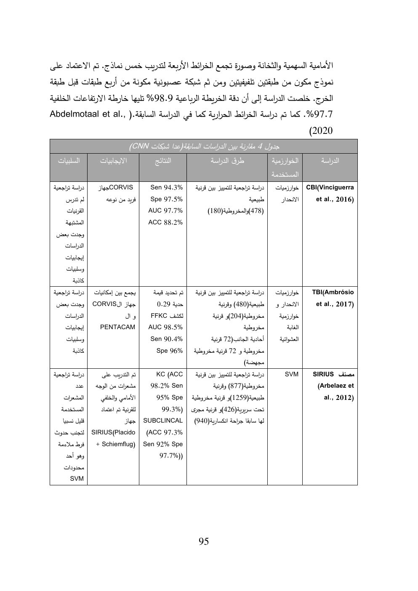
Die Tabelle wird als tatsächliches Originalseitenbild gezeigt, weil die Struktur in diesem Segment nicht zuverlässig vollständig als HTML rekonstruiert werden konnte. Original S. 95 ist auch im unveränderten PDF-Faksimile enthalten.
Tabelle 5
Vergleich früherer Studien (CNN-Netze)
Quelle: Originaldissertation, Original S. 96. Rechtebasis: deutsche Übersetzung mit rekonstruierter HTML-Tabelle.
| Studie/Modell | Verfahren und Stichprobe | Ergebnisse | Vorteile | Nachteile |
|---|---|---|---|---|
| KeratoDetect (Lavric & Valentin, 2019), CNN | Künstlich erzeugte Bilder: 1.500 normal und 1.500 KC; die verwendeten Karten sind nicht eindeutig beschrieben und waren vermutlich auf Krümmungskarten beschränkt | Genauigkeit 99,33 % | – | Keine Bilder realer Patientinnen und Patienten; Kartentypen unklar, vermutlich nur Krümmungskarten |
| Kamiya et al. (2019), CNN/ResNet-18 | Retrospektiv mit AS-OCT, sechs Karten; 239 normal und 304 KC | Gesamtgenauigkeit 99,1 %; hintere Höhenkarte 99,3 %, danach hintere Krümmung 99,1 % | AS-OCT; sechs Karten; vortrainiertes ResNet-18 | Verdächtige Fälle nicht untersucht; Nutzung eines vortrainierten Modells |
| Kuo et al. (2020), CNN (VGG16, InceptionV3, ResNet152) | Retrospektiv mit Videokeratoskop; Training: 170 KC und 156 normal, Test: 28 subklinisch | ResNet152: 95,8 % im Training; 28,5 % bei subklinischen Testfällen | Vortrainierte Modelle; diskriminative Pixelmerkmals- und klassenbezogene Heatmaps zum Verständnis des Modells | Videokeratoskop liefert keine genauen Informationen zur hinteren Hornhautfläche; nur vordere Krümmungskarte; subklinische Fälle wurden unzureichend erkannt |
| Abdelmotaal et al. (2020), CNN | Retrospektiv mit PENTACAM: 1.038 KC, 1.108 normal, 1.072 subklinisch oder Forme fruste; vier Einzelkarten und ein kombiniertes Bild | Kombinierte Vier-Karten-Karte 98,9 %, hintere Höhenkarte 97,7 % | Vier Karten einzeln und kombiniert; PENTACAM; Heatmaps zur Untersuchung der Modellarbeitsweise | Keine unabhängige Testgruppe; keine echten Verdachtsfälle, sondern nur subklinische/Forme-fruste-Fälle |
| Vorliegende Studie | Retrospektive Sammlung/Training und unabhängige Testgruppe mit realen Bildern; Training: 559 KC, 1.217 normal, 167 verdächtig; Test: 13 KC, 366 normal, 43 verdächtig | Beste Netze: vordere Höhenkarte, danach hintere Höhenkarte, vordere refraktive Stärke, äquivalente refraktive Stärke; Genauigkeit/F1-Score 94,5–94,3 % | Neues Netzwerkdesign; Transfer Learning; Data Augmentation; Training mit realen Bildern; große Stichprobe; unabhängige Testgruppe; SIRIUS; Heatmaps; Lesung mit Unterstützung | Trainings-, Validierungs- und Testgruppen unausgewogen; AS-OCT gilt als genauer als SIRIUS; retrospektives Design |
Tabelle 6
Verteilung der Trainingsgruppe nach Geschlecht und Diagnose sowie Chi-Quadrat-Test
Quelle: Originaldissertation, Original S. 101. Rechtebasis: lokal gerendertes Originalseitenbild; keine externe Grafiklizenz.
{kind=link}
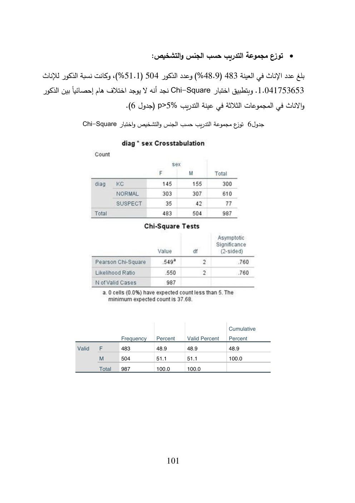
Die Tabelle wird als tatsächliches Originalseitenbild gezeigt, weil die Struktur in diesem Segment nicht zuverlässig vollständig als HTML rekonstruiert werden konnte. Original S. 101 ist auch im unveränderten PDF-Faksimile enthalten.
Tabelle 7
Altersverteilung der Trainingsgruppe
Quelle: Originaldissertation, Original S. 102. Rechtebasis: lokal gerendertes Originalseitenbild; keine externe Grafiklizenz.
{kind=link}
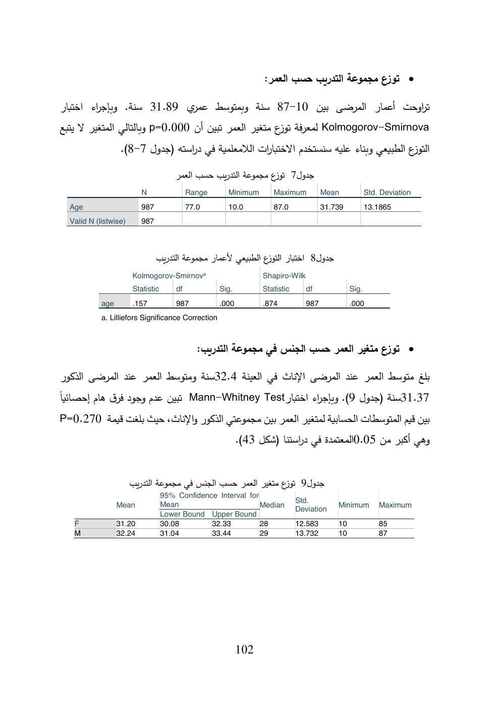
Die Tabelle wird als tatsächliches Originalseitenbild gezeigt, weil die Struktur in diesem Segment nicht zuverlässig vollständig als HTML rekonstruiert werden konnte. Original S. 102 ist auch im unveränderten PDF-Faksimile enthalten.
Tabelle 8
Prüfung der Normalverteilung des Alters der Trainingsgruppe
Quelle: Originaldissertation, Original S. 102. Rechtebasis: lokal gerendertes Originalseitenbild; keine externe Grafiklizenz.
Tabelle 9
Altersverteilung nach Geschlecht in der Trainingsgruppe
Quelle: Originaldissertation, Original S. 102. Rechtebasis: lokal gerendertes Originalseitenbild; keine externe Grafiklizenz.
Tabelle 10
Altersverteilung nach Diagnose in der Trainingsgruppe
Quelle: Originaldissertation, Original S. 104. Rechtebasis: lokal gerendertes Originalseitenbild; keine externe Grafiklizenz.
{kind=link}
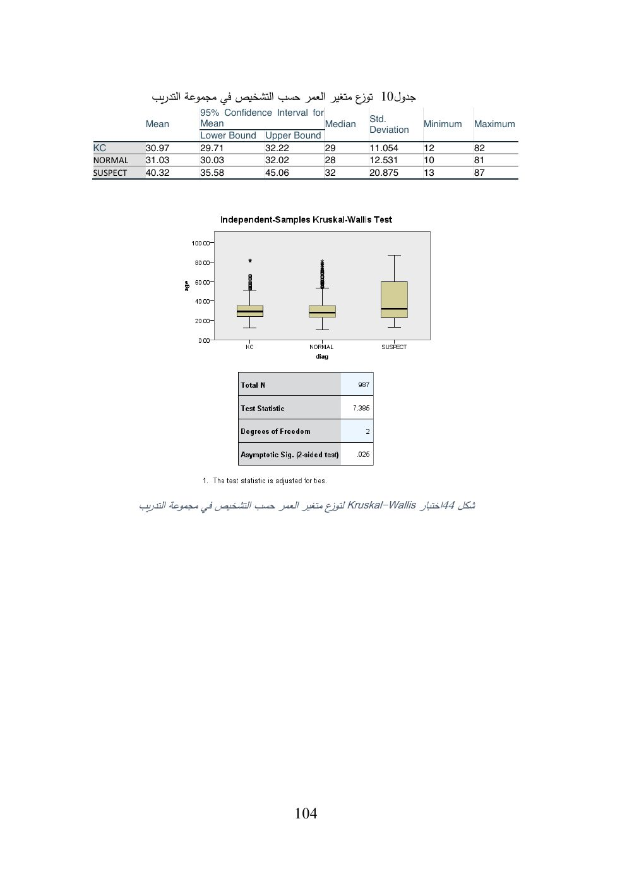
Die Tabelle wird als tatsächliches Originalseitenbild gezeigt, weil die Struktur in diesem Segment nicht zuverlässig vollständig als HTML rekonstruiert werden konnte. Original S. 104 ist auch im unveränderten PDF-Faksimile enthalten.
Tabelle 11
Verteilung der Testgruppe nach Geschlecht und Diagnose sowie Chi-Quadrat-Test
Quelle: Originaldissertation, Original S. 106. Rechtebasis: lokal gerendertes Originalseitenbild; keine externe Grafiklizenz.
{kind=link}
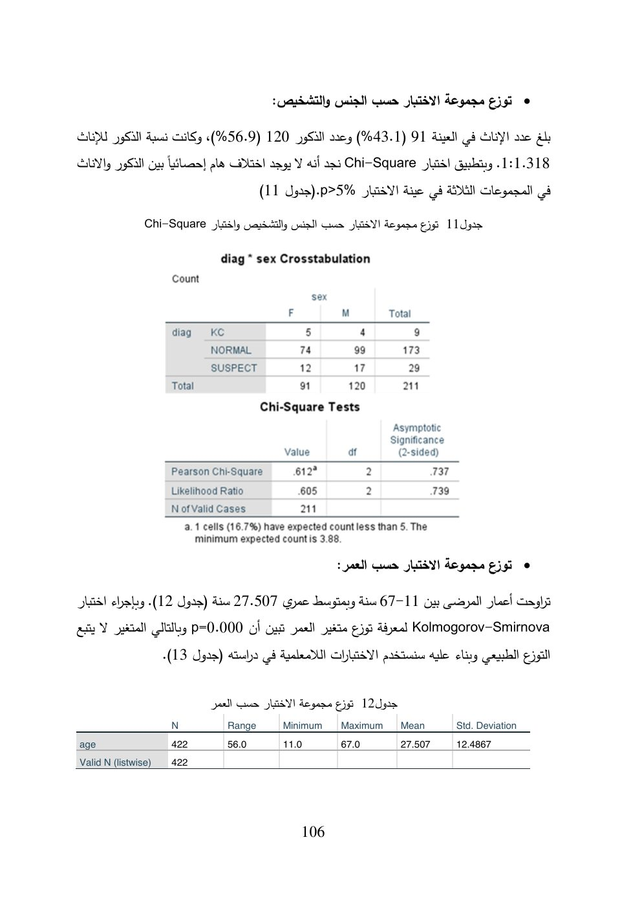
Die Tabelle wird als tatsächliches Originalseitenbild gezeigt, weil die Struktur in diesem Segment nicht zuverlässig vollständig als HTML rekonstruiert werden konnte. Original S. 106 ist auch im unveränderten PDF-Faksimile enthalten.
Tabelle 12
Altersverteilung der Testgruppe
Quelle: Originaldissertation, Original S. 106. Rechtebasis: lokal gerendertes Originalseitenbild; keine externe Grafiklizenz.
Tabelle 13
Prüfung der Normalverteilung des Alters der Testgruppe
Quelle: Originaldissertation, Original S. 107. Rechtebasis: lokal gerendertes Originalseitenbild; keine externe Grafiklizenz.
{kind=link}
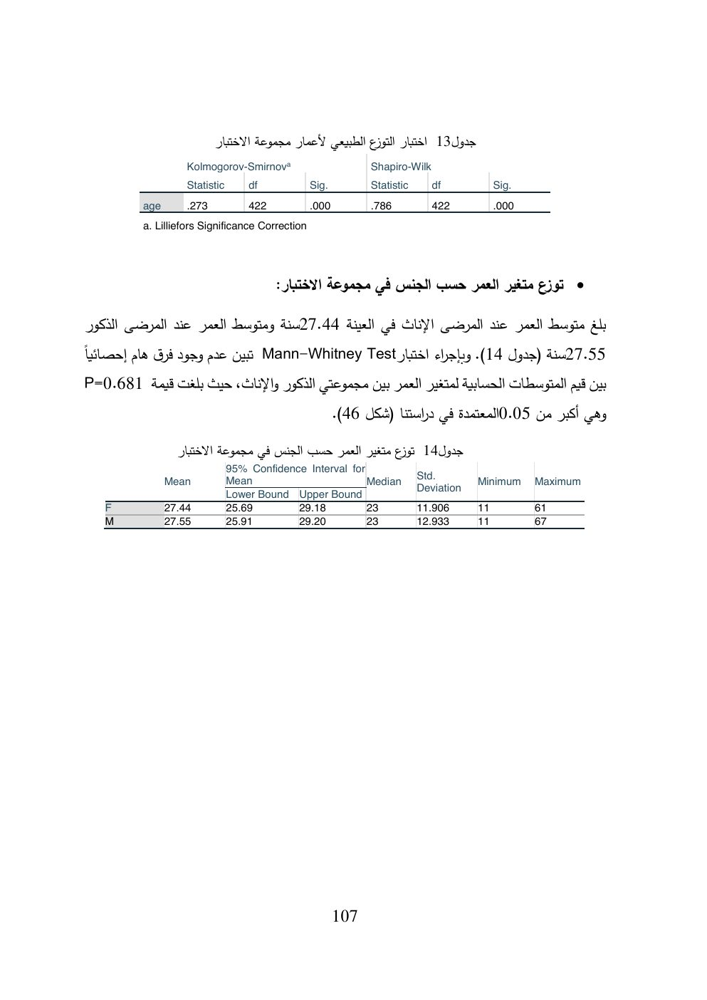
Die Tabelle wird als tatsächliches Originalseitenbild gezeigt, weil die Struktur in diesem Segment nicht zuverlässig vollständig als HTML rekonstruiert werden konnte. Original S. 107 ist auch im unveränderten PDF-Faksimile enthalten.
Tabelle 14
Altersverteilung nach Geschlecht in der Testgruppe
Quelle: Originaldissertation, Original S. 107. Rechtebasis: lokal gerendertes Originalseitenbild; keine externe Grafiklizenz.
Tabelle 15
Altersverteilung nach Diagnose in der Testgruppe
Quelle: Originaldissertation, Original S. 109. Rechtebasis: lokal gerendertes Originalseitenbild; keine externe Grafiklizenz.
{kind=link}
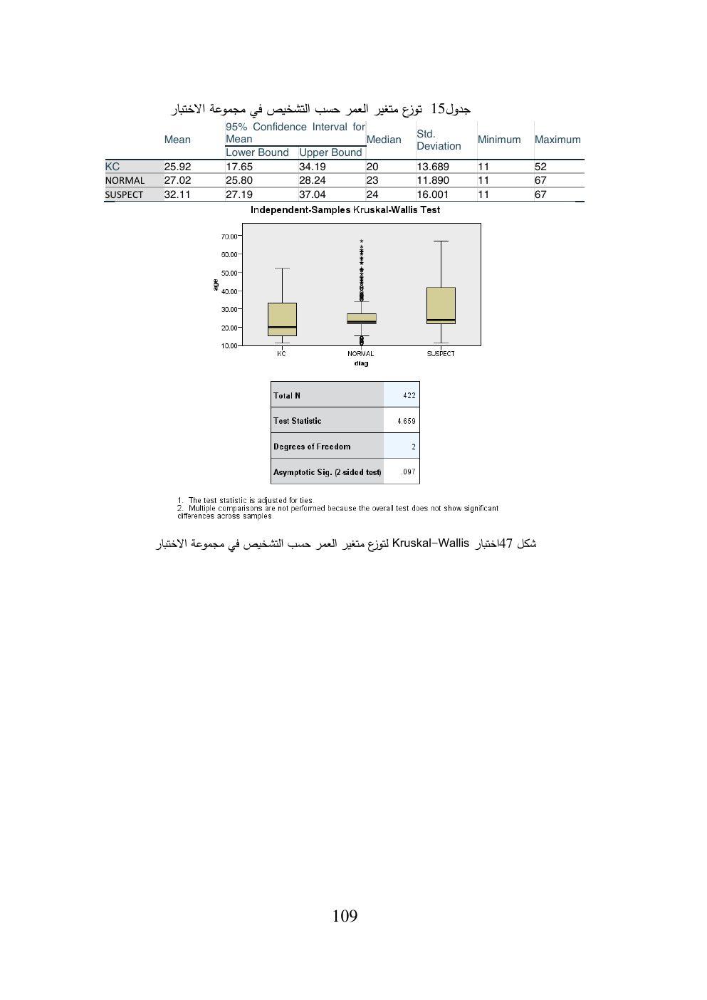
Die Tabelle wird als tatsächliches Originalseitenbild gezeigt, weil die Struktur in diesem Segment nicht zuverlässig vollständig als HTML rekonstruiert werden konnte. Original S. 109 ist auch im unveränderten PDF-Faksimile enthalten.
Tabelle 16
Genauigkeitskennwerte der Trainingsgruppe (vordere sagittale Krümmungskarte)
Quelle: Originaldissertation, Original S. 116. Rechtebasis: lokal gerendertes Originalseitenbild; keine externe Grafiklizenz.
{kind=link}
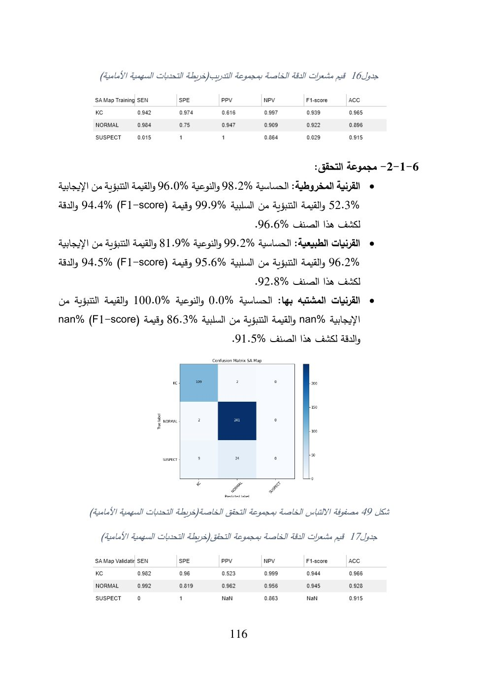
Die Tabelle wird als tatsächliches Originalseitenbild gezeigt, weil die Struktur in diesem Segment nicht zuverlässig vollständig als HTML rekonstruiert werden konnte. Original S. 116 ist auch im unveränderten PDF-Faksimile enthalten.
Tabelle 17
Genauigkeitskennwerte der Validierungsgruppe (vordere sagittale Krümmungskarte)
Quelle: Originaldissertation, Original S. 116. Rechtebasis: lokal gerendertes Originalseitenbild; keine externe Grafiklizenz.
Tabelle 18
Genauigkeitskennwerte der Testgruppe (vordere sagittale Krümmungskarte)
Quelle: Originaldissertation, Original S. 117. Rechtebasis: lokal gerendertes Originalseitenbild; keine externe Grafiklizenz.
{kind=link}
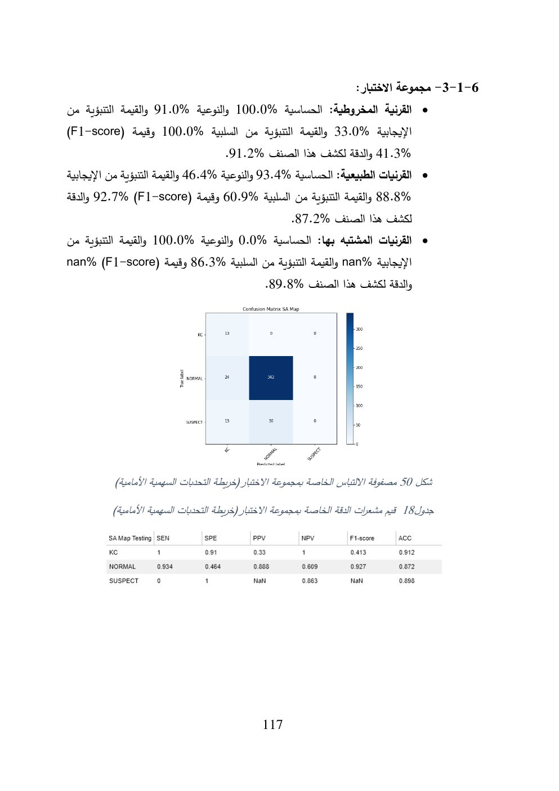
Die Tabelle wird als tatsächliches Originalseitenbild gezeigt, weil die Struktur in diesem Segment nicht zuverlässig vollständig als HTML rekonstruiert werden konnte. Original S. 117 ist auch im unveränderten PDF-Faksimile enthalten.
Tabelle 19
Genauigkeitskennwerte der Trainingsgruppe (hintere sagittale Krümmungskarte)
Quelle: Originaldissertation, Original S. 118. Rechtebasis: lokal gerendertes Originalseitenbild; keine externe Grafiklizenz.
{kind=link}
Tabelle 20
Genauigkeitskennwerte der Validierungsgruppe (hintere sagittale Krümmungskarte)
Quelle: Originaldissertation, Original S. 119. Rechtebasis: lokal gerendertes Originalseitenbild; keine externe Grafiklizenz.
{kind=link}
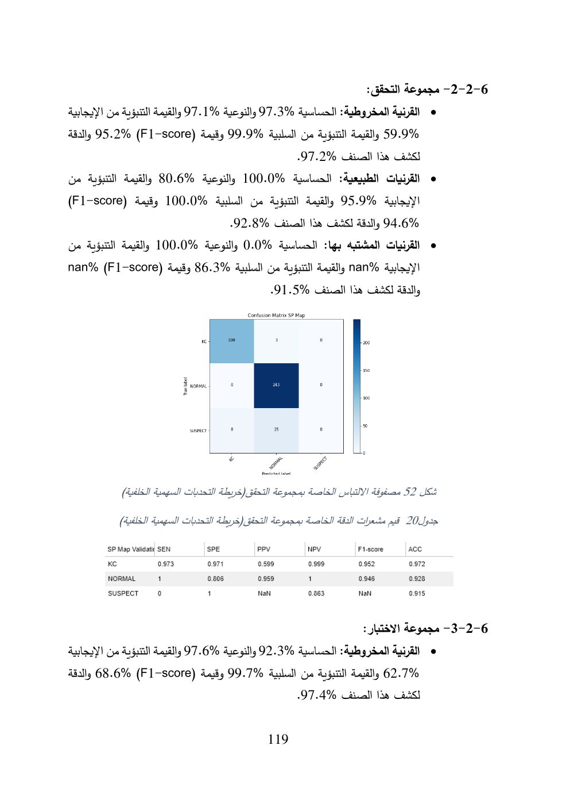
Die Tabelle wird als tatsächliches Originalseitenbild gezeigt, weil die Struktur in diesem Segment nicht zuverlässig vollständig als HTML rekonstruiert werden konnte. Original S. 119 ist auch im unveränderten PDF-Faksimile enthalten.
Tabelle 21
Genauigkeitskennwerte der Testgruppe (hintere sagittale Krümmungskarte)
Quelle: Originaldissertation, Original S. 120. Rechtebasis: lokal gerendertes Originalseitenbild; keine externe Grafiklizenz.
{kind=link}
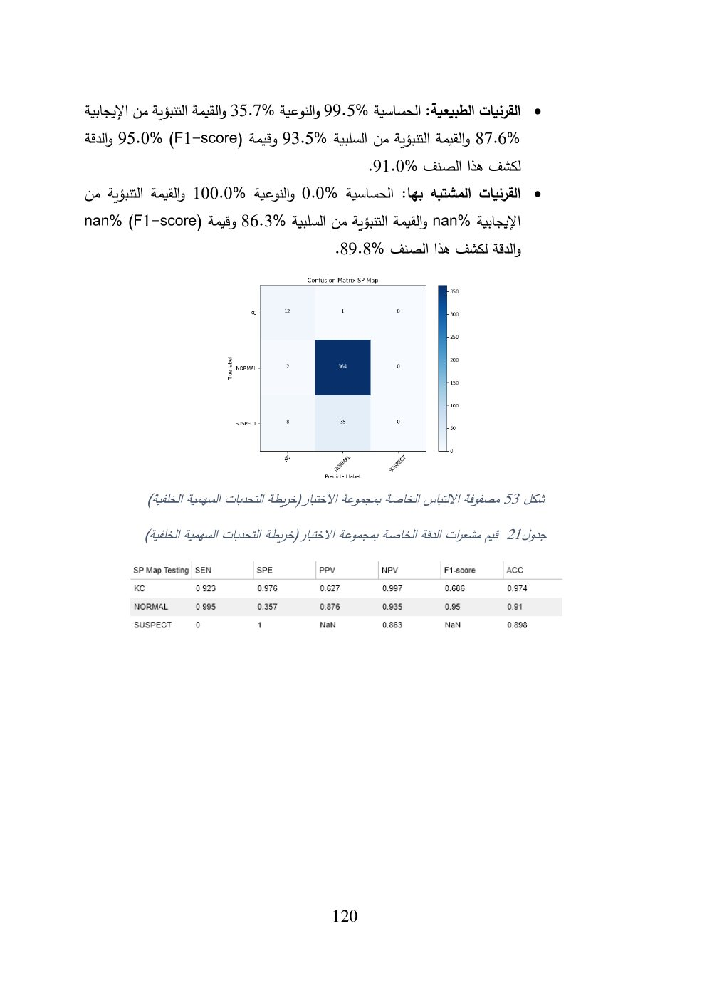
Die Tabelle wird als tatsächliches Originalseitenbild gezeigt, weil die Struktur in diesem Segment nicht zuverlässig vollständig als HTML rekonstruiert werden konnte. Original S. 120 ist auch im unveränderten PDF-Faksimile enthalten.
Tabelle 22
Genauigkeitskennwerte der Trainingsgruppe (vordere tangentiale Krümmungskarte)
Quelle: Originaldissertation, Original S. 121. Rechtebasis: lokal gerendertes Originalseitenbild; keine externe Grafiklizenz.
{kind=link}
Tabelle 23
Genauigkeitskennwerte der Validierungsgruppe (vordere tangentiale Krümmungskarte)
Quelle: Originaldissertation, Original S. 122. Rechtebasis: lokal gerendertes Originalseitenbild; keine externe Grafiklizenz.
{kind=link}
Tabelle 24
Genauigkeitskennwerte der Testgruppe (vordere tangentiale Krümmungskarte)
Quelle: Originaldissertation, Original S. 123. Rechtebasis: lokal gerendertes Originalseitenbild; keine externe Grafiklizenz.
{kind=link}
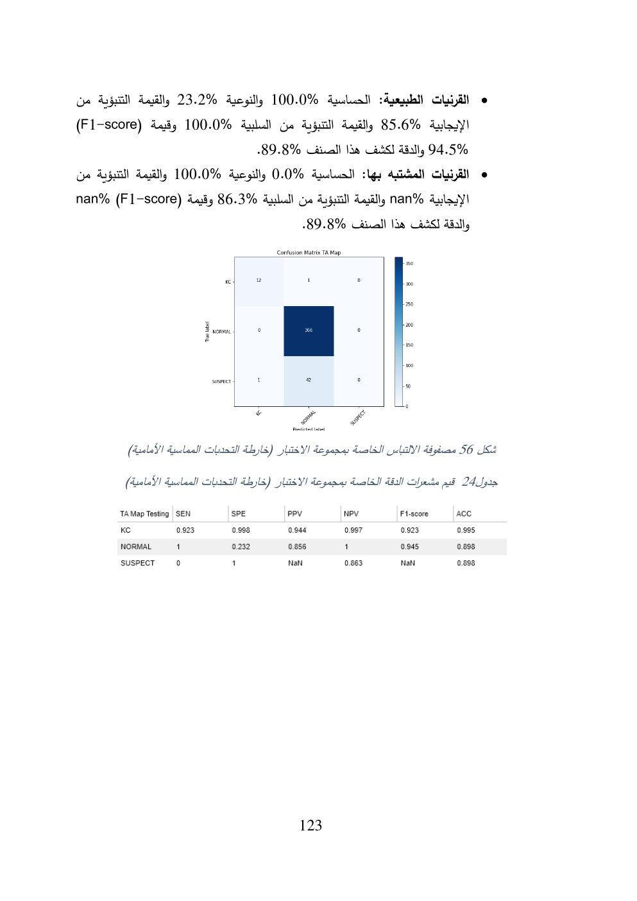
Die Tabelle wird als tatsächliches Originalseitenbild gezeigt, weil die Struktur in diesem Segment nicht zuverlässig vollständig als HTML rekonstruiert werden konnte. Original S. 123 ist auch im unveränderten PDF-Faksimile enthalten.
Tabelle 25
Genauigkeitskennwerte der Trainingsgruppe (hintere tangentiale Krümmungskarte)
Quelle: Originaldissertation, Original S. 124. Rechtebasis: lokal gerendertes Originalseitenbild; keine externe Grafiklizenz.
{kind=link}
Tabelle 26
Genauigkeitskennwerte der Validierungsgruppe (hintere tangentiale Krümmungskarte)
Quelle: Originaldissertation, Original S. 125. Rechtebasis: lokal gerendertes Originalseitenbild; keine externe Grafiklizenz.
{kind=link}
Tabelle 27
Genauigkeitskennwerte der Testgruppe (hintere tangentiale Krümmungskarte)
Quelle: Originaldissertation, Original S. 126. Rechtebasis: lokal gerendertes Originalseitenbild; keine externe Grafiklizenz.
{kind=link}
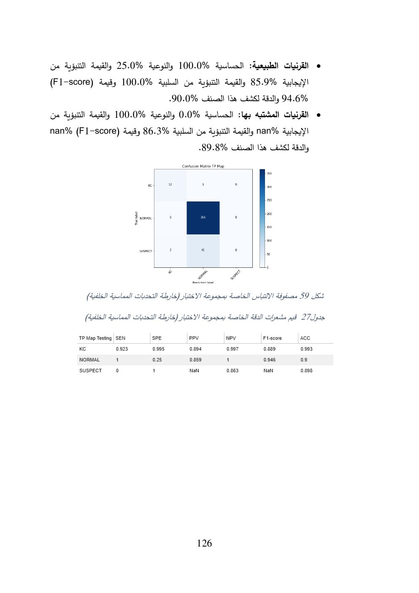
Die Tabelle wird als tatsächliches Originalseitenbild gezeigt, weil die Struktur in diesem Segment nicht zuverlässig vollständig als HTML rekonstruiert werden konnte. Original S. 126 ist auch im unveränderten PDF-Faksimile enthalten.
Tabelle 28
Genauigkeitskennwerte der Trainingsgruppe (Dickenkarte)
Quelle: Originaldissertation, Original S. 127. Rechtebasis: lokal gerendertes Originalseitenbild; keine externe Grafiklizenz.
{kind=link}
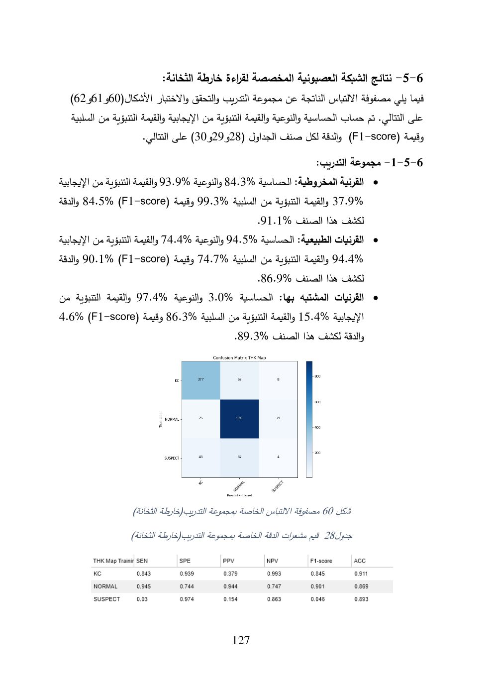
Die Tabelle wird als tatsächliches Originalseitenbild gezeigt, weil die Struktur in diesem Segment nicht zuverlässig vollständig als HTML rekonstruiert werden konnte. Original S. 127 ist auch im unveränderten PDF-Faksimile enthalten.
Tabelle 29
Genauigkeitskennwerte der Validierungsgruppe (Dickenkarte)
Quelle: Originaldissertation, Original S. 128. Rechtebasis: lokal gerendertes Originalseitenbild; keine externe Grafiklizenz.
{kind=link}
Tabelle 30
Genauigkeitskennwerte der Testgruppe (Dickenkarte)
Quelle: Originaldissertation, Original S. 129. Rechtebasis: lokal gerendertes Originalseitenbild; keine externe Grafiklizenz.
{kind=link}
Tabelle 31
Genauigkeitskennwerte der Trainingsgruppe (vordere Höhenkarte)
Quelle: Originaldissertation, Original S. 130. Rechtebasis: lokal gerendertes Originalseitenbild; keine externe Grafiklizenz.
{kind=link}
Tabelle 32
Genauigkeitskennwerte der Validierungsgruppe (vordere Höhenkarte)
Quelle: Originaldissertation, Original S. 131. Rechtebasis: lokal gerendertes Originalseitenbild; keine externe Grafiklizenz.
{kind=link}
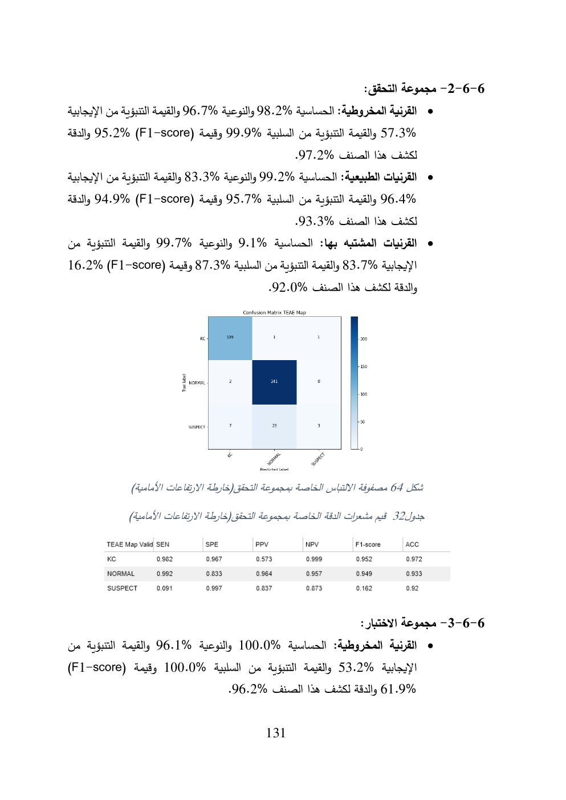
Die Tabelle wird als tatsächliches Originalseitenbild gezeigt, weil die Struktur in diesem Segment nicht zuverlässig vollständig als HTML rekonstruiert werden konnte. Original S. 131 ist auch im unveränderten PDF-Faksimile enthalten.
Tabelle 33
Genauigkeitskennwerte der Testgruppe (vordere Höhenkarte)
Quelle: Originaldissertation, Original S. 132. Rechtebasis: lokal gerendertes Originalseitenbild; keine externe Grafiklizenz.
{kind=link}
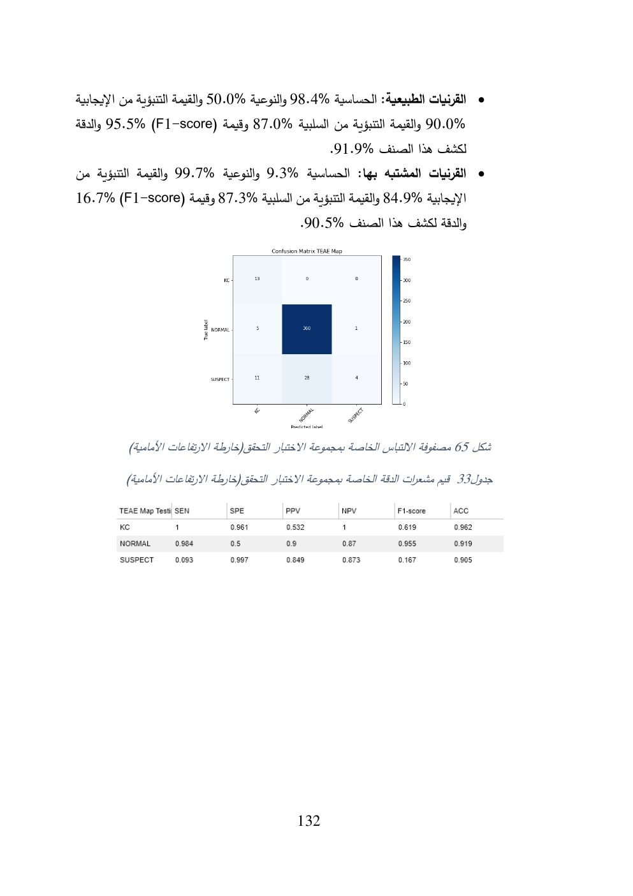
Die Tabelle wird als tatsächliches Originalseitenbild gezeigt, weil die Struktur in diesem Segment nicht zuverlässig vollständig als HTML rekonstruiert werden konnte. Original S. 132 ist auch im unveränderten PDF-Faksimile enthalten.
Tabelle 34
Genauigkeitskennwerte der Trainingsgruppe (hintere Höhenkarte)
Quelle: Originaldissertation, Original S. 133. Rechtebasis: lokal gerendertes Originalseitenbild; keine externe Grafiklizenz.
{kind=link}
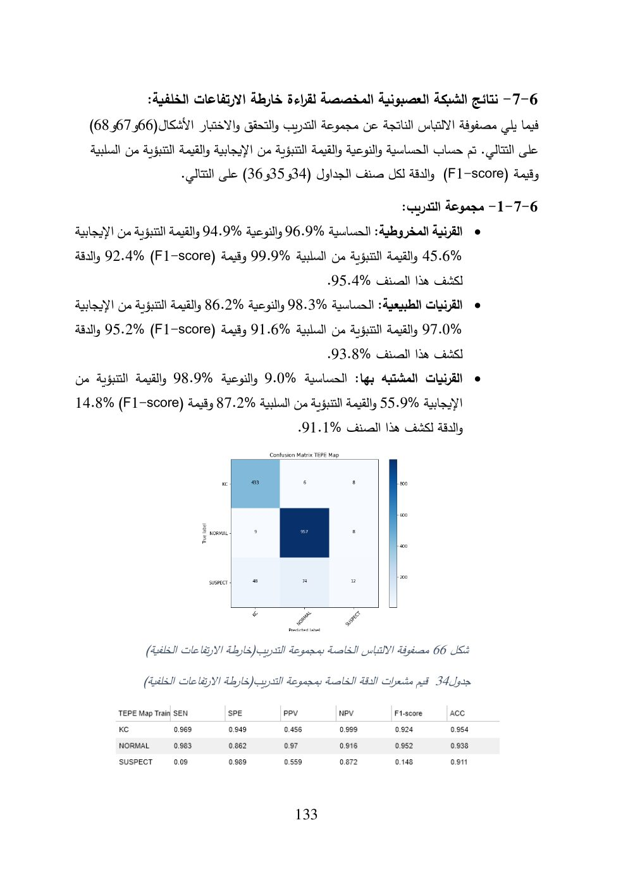
Die Tabelle wird als tatsächliches Originalseitenbild gezeigt, weil die Struktur in diesem Segment nicht zuverlässig vollständig als HTML rekonstruiert werden konnte. Original S. 133 ist auch im unveränderten PDF-Faksimile enthalten.
Tabelle 35
Genauigkeitskennwerte der Validierungsgruppe (hintere Höhenkarte)
Quelle: Originaldissertation, Original S. 134. Rechtebasis: lokal gerendertes Originalseitenbild; keine externe Grafiklizenz.
{kind=link}
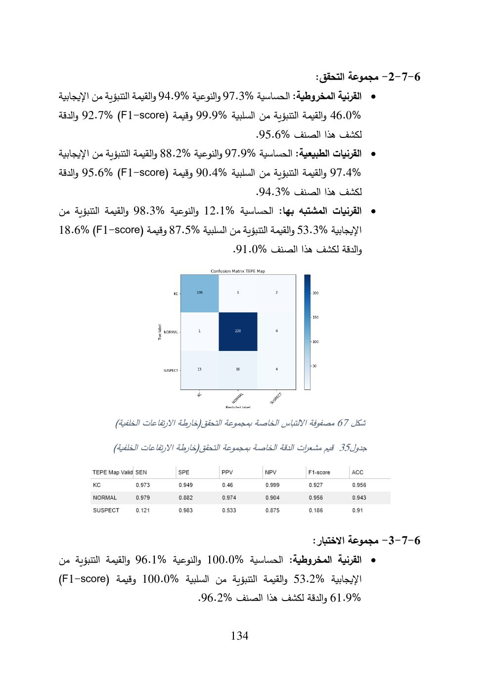
Die Tabelle wird als tatsächliches Originalseitenbild gezeigt, weil die Struktur in diesem Segment nicht zuverlässig vollständig als HTML rekonstruiert werden konnte. Original S. 134 ist auch im unveränderten PDF-Faksimile enthalten.
Tabelle 36
Genauigkeitskennwerte der Testgruppe (hintere Höhenkarte)
Quelle: Originaldissertation, Original S. 135. Rechtebasis: lokal gerendertes Originalseitenbild; keine externe Grafiklizenz.
{kind=link}
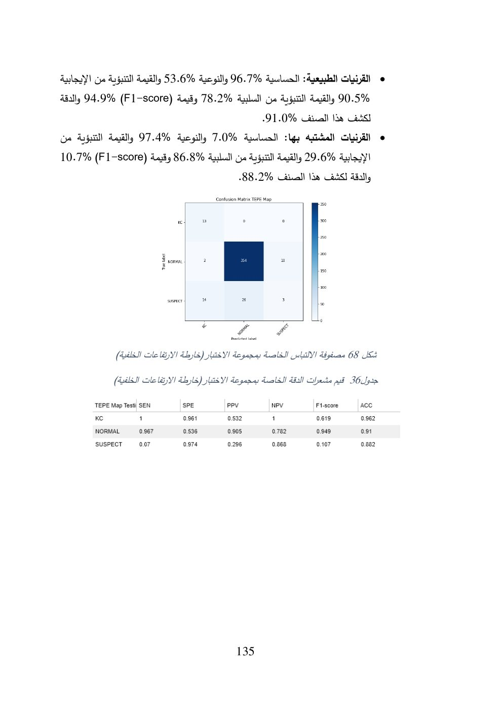
Die Tabelle wird als tatsächliches Originalseitenbild gezeigt, weil die Struktur in diesem Segment nicht zuverlässig vollständig als HTML rekonstruiert werden konnte. Original S. 135 ist auch im unveränderten PDF-Faksimile enthalten.
Tabelle 37
Genauigkeitskennwerte der Trainingsgruppe (vordere refraktive Stärkekarte)
Quelle: Originaldissertation, Original S. 136. Rechtebasis: lokal gerendertes Originalseitenbild; keine externe Grafiklizenz.
{kind=link}
Tabelle 38
Genauigkeitskennwerte der Validierungsgruppe (vordere refraktive Stärkekarte)
Quelle: Originaldissertation, Original S. 137. Rechtebasis: lokal gerendertes Originalseitenbild; keine externe Grafiklizenz.
{kind=link}
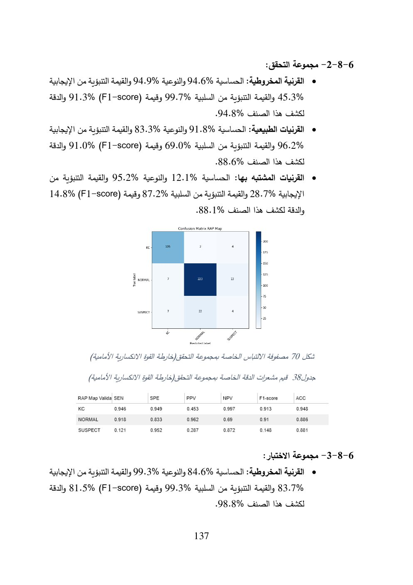
Die Tabelle wird als tatsächliches Originalseitenbild gezeigt, weil die Struktur in diesem Segment nicht zuverlässig vollständig als HTML rekonstruiert werden konnte. Original S. 137 ist auch im unveränderten PDF-Faksimile enthalten.
Tabelle 39
Genauigkeitskennwerte der Testgruppe (vordere refraktive Stärkekarte)
Quelle: Originaldissertation, Original S. 138. Rechtebasis: lokal gerendertes Originalseitenbild; keine externe Grafiklizenz.
{kind=link}
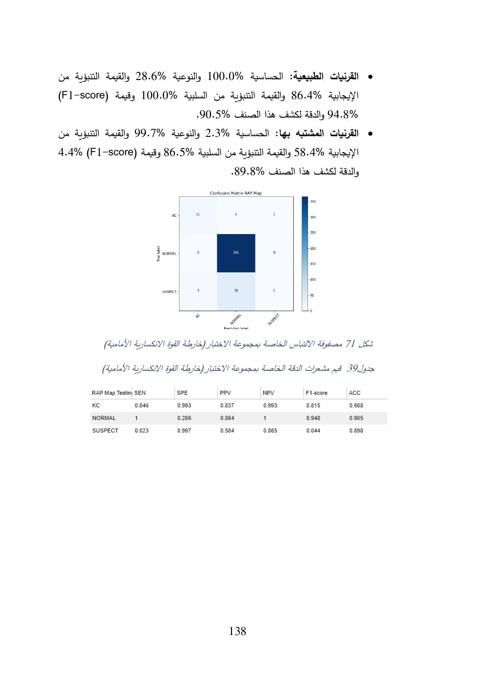
Die Tabelle wird als tatsächliches Originalseitenbild gezeigt, weil die Struktur in diesem Segment nicht zuverlässig vollständig als HTML rekonstruiert werden konnte. Original S. 138 ist auch im unveränderten PDF-Faksimile enthalten.
Tabelle 40
Genauigkeitskennwerte der Trainingsgruppe (hintere refraktive Stärkekarte)
Quelle: Originaldissertation, Original S. 139. Rechtebasis: lokal gerendertes Originalseitenbild; keine externe Grafiklizenz.
{kind=link}
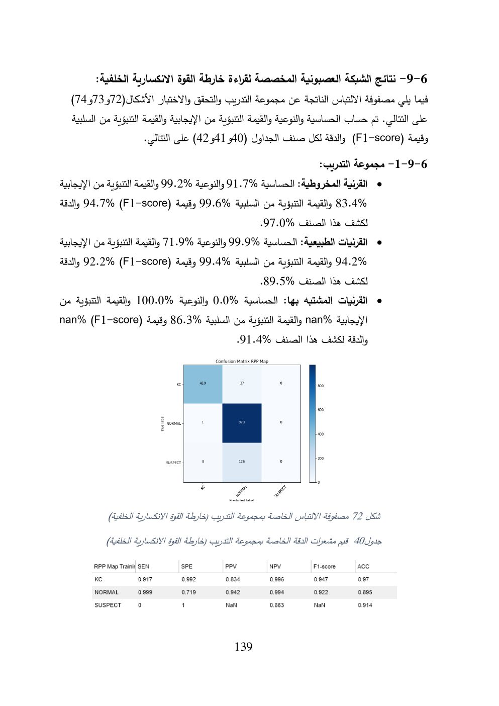
Die Tabelle wird als tatsächliches Originalseitenbild gezeigt, weil die Struktur in diesem Segment nicht zuverlässig vollständig als HTML rekonstruiert werden konnte. Original S. 139 ist auch im unveränderten PDF-Faksimile enthalten.
Tabelle 41
Genauigkeitskennwerte der Validierungsgruppe (hintere refraktive Stärkekarte)
Quelle: Originaldissertation, Original S. 140. Rechtebasis: lokal gerendertes Originalseitenbild; keine externe Grafiklizenz.
{kind=link}
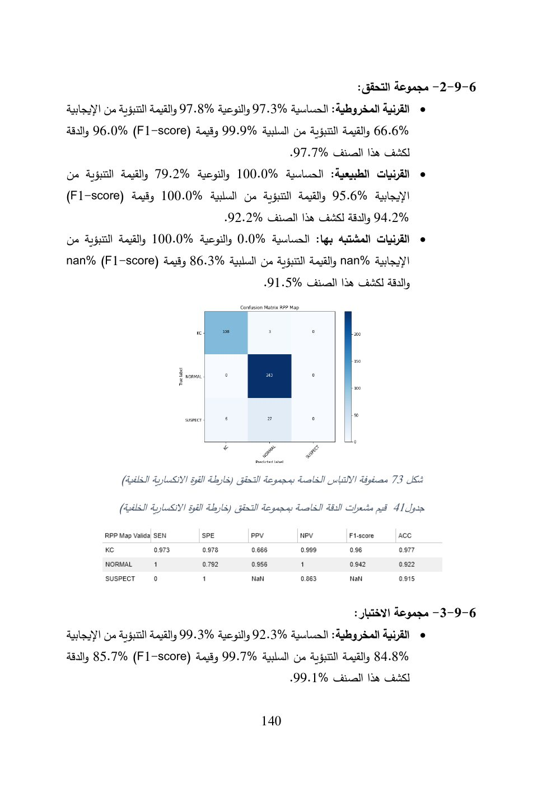
Die Tabelle wird als tatsächliches Originalseitenbild gezeigt, weil die Struktur in diesem Segment nicht zuverlässig vollständig als HTML rekonstruiert werden konnte. Original S. 140 ist auch im unveränderten PDF-Faksimile enthalten.
Tabelle 42
Genauigkeitskennwerte der Testgruppe (hintere refraktive Stärkekarte)
Quelle: Originaldissertation, Original S. 141. Rechtebasis: lokal gerendertes Originalseitenbild; keine externe Grafiklizenz.
{kind=link}
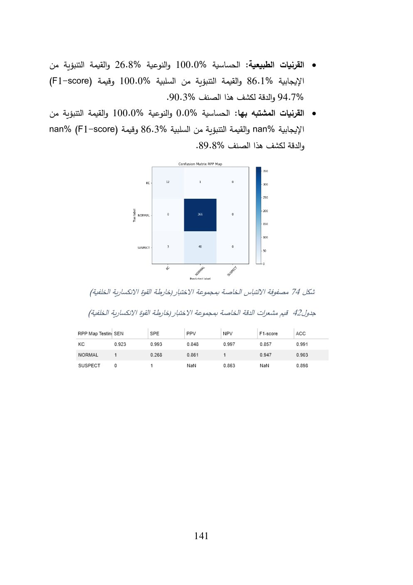
Die Tabelle wird als tatsächliches Originalseitenbild gezeigt, weil die Struktur in diesem Segment nicht zuverlässig vollständig als HTML rekonstruiert werden konnte. Original S. 141 ist auch im unveränderten PDF-Faksimile enthalten.
Tabelle 43
Genauigkeitskennwerte der Trainingsgruppe (äquivalente refraktive Stärkekarte)
Quelle: Originaldissertation, Original S. 142. Rechtebasis: lokal gerendertes Originalseitenbild; keine externe Grafiklizenz.
{kind=link}
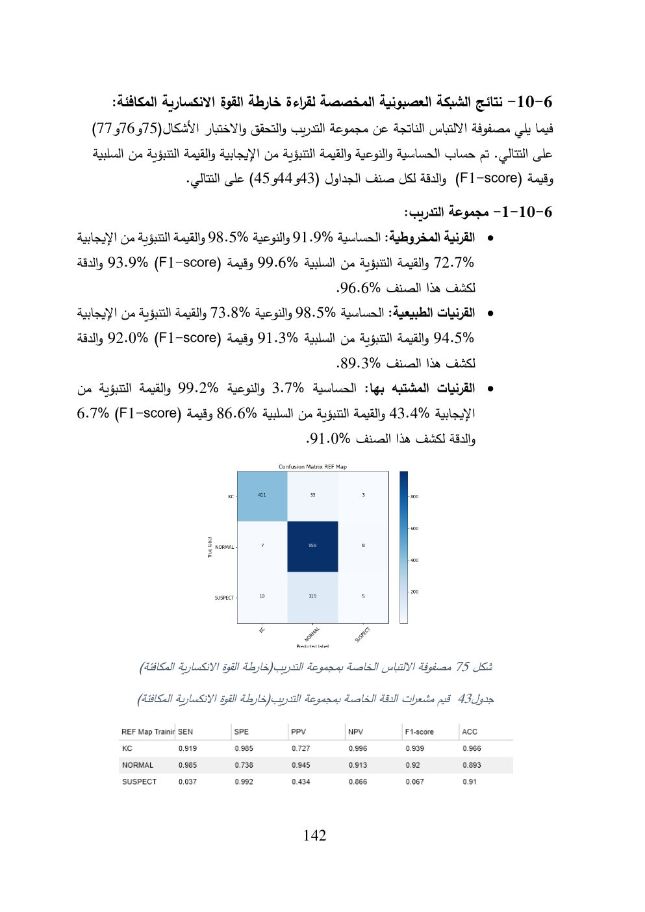
Die Tabelle wird als tatsächliches Originalseitenbild gezeigt, weil die Struktur in diesem Segment nicht zuverlässig vollständig als HTML rekonstruiert werden konnte. Original S. 142 ist auch im unveränderten PDF-Faksimile enthalten.
Tabelle 44
Genauigkeitskennwerte der Validierungsgruppe (äquivalente refraktive Stärkekarte)
Quelle: Originaldissertation, Original S. 143. Rechtebasis: lokal gerendertes Originalseitenbild; keine externe Grafiklizenz.
{kind=link}
Tabelle 45
Genauigkeitskennwerte der Testgruppe (äquivalente refraktive Stärkekarte)
Quelle: Originaldissertation, Original S. 144. Rechtebasis: lokal gerendertes Originalseitenbild; keine externe Grafiklizenz.
{kind=link}
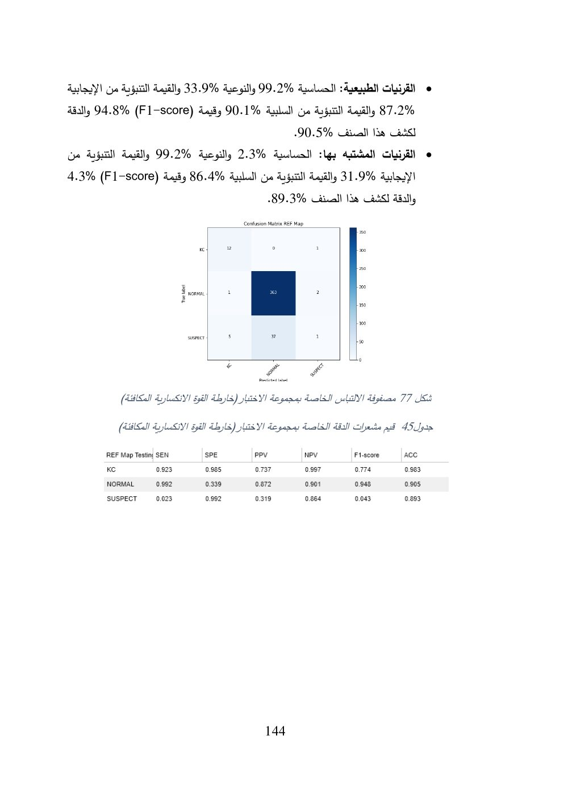
Die Tabelle wird als tatsächliches Originalseitenbild gezeigt, weil die Struktur in diesem Segment nicht zuverlässig vollständig als HTML rekonstruiert werden konnte. Original S. 144 ist auch im unveränderten PDF-Faksimile enthalten.
Tabelle 46
Genauigkeitskennwerte der Trainingsgruppe (KI-System)
Quelle: Originaldissertation, Original S. 145. Rechtebasis: lokal gerendertes Originalseitenbild; keine externe Grafiklizenz.
{kind=link}
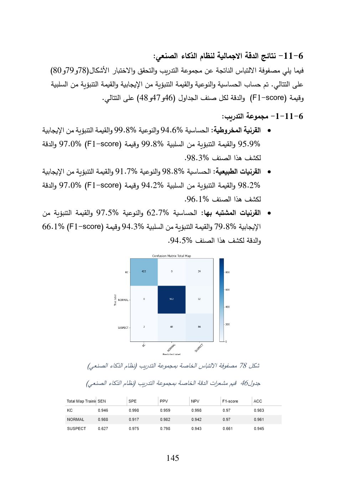
Die Tabelle wird als tatsächliches Originalseitenbild gezeigt, weil die Struktur in diesem Segment nicht zuverlässig vollständig als HTML rekonstruiert werden konnte. Original S. 145 ist auch im unveränderten PDF-Faksimile enthalten.
Tabelle 47
Genauigkeitskennwerte der Validierungsgruppe (KI-System)
Quelle: Originaldissertation, Original S. 146. Rechtebasis: lokal gerendertes Originalseitenbild; keine externe Grafiklizenz.
{kind=link}
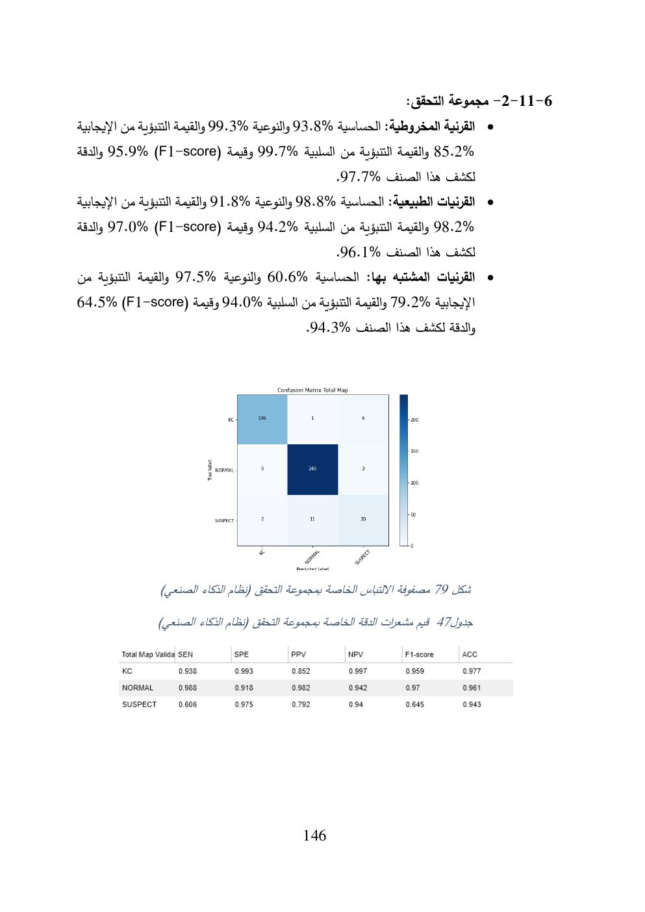
Die Tabelle wird als tatsächliches Originalseitenbild gezeigt, weil die Struktur in diesem Segment nicht zuverlässig vollständig als HTML rekonstruiert werden konnte. Original S. 146 ist auch im unveränderten PDF-Faksimile enthalten.
Tabelle 48
Genauigkeitskennwerte der Testgruppe (KI-System)
Quelle: Originaldissertation, Original S. 147. Rechtebasis: lokal gerendertes Originalseitenbild; keine externe Grafiklizenz.
{kind=link}
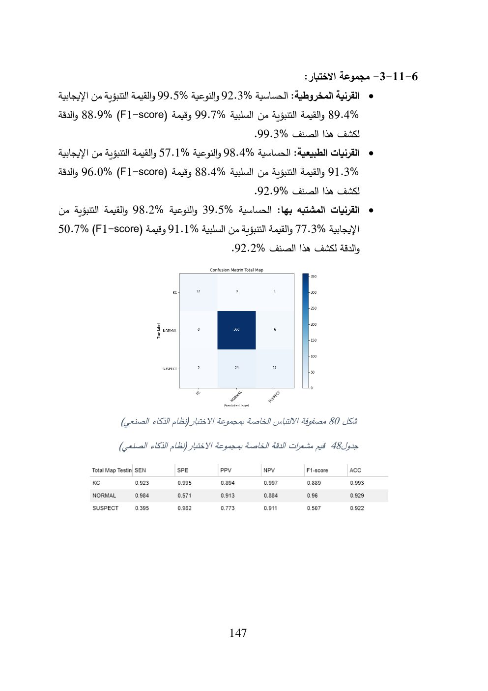
Die Tabelle wird als tatsächliches Originalseitenbild gezeigt, weil die Struktur in diesem Segment nicht zuverlässig vollständig als HTML rekonstruiert werden konnte. Original S. 147 ist auch im unveränderten PDF-Faksimile enthalten.
Tabelle 49
Genauigkeitskennwerte der Testgruppe (SIRIUS)
Quelle: Originaldissertation, Original S. 148. Rechtebasis: lokal gerendertes Originalseitenbild; keine externe Grafiklizenz.
{kind=link}
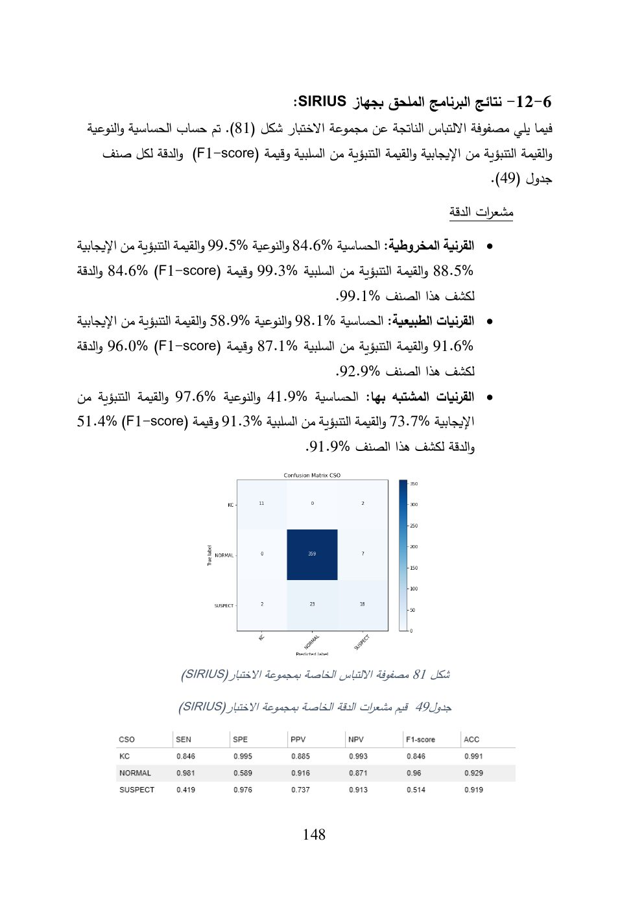
Die Tabelle wird als tatsächliches Originalseitenbild gezeigt, weil die Struktur in diesem Segment nicht zuverlässig vollständig als HTML rekonstruiert werden konnte. Original S. 148 ist auch im unveränderten PDF-Faksimile enthalten.
Tabelle 50
Genauigkeitskennwerte der Testgruppe (Arzt ohne Unterstützung des KI-Systems)
Quelle: Originaldissertation, Original S. 149. Rechtebasis: lokal gerendertes Originalseitenbild; keine externe Grafiklizenz.
{kind=link}
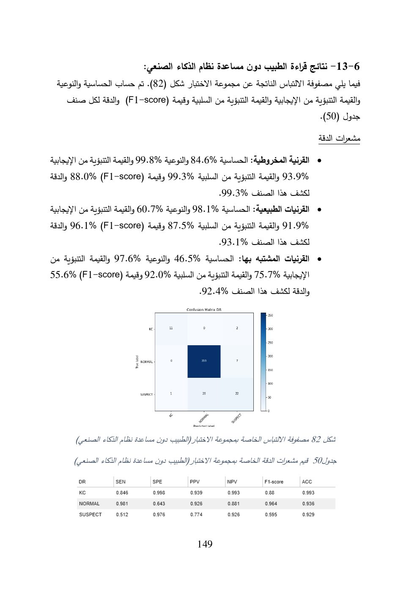
Die Tabelle wird als tatsächliches Originalseitenbild gezeigt, weil die Struktur in diesem Segment nicht zuverlässig vollständig als HTML rekonstruiert werden konnte. Original S. 149 ist auch im unveränderten PDF-Faksimile enthalten.
Tabelle 51
Genauigkeitskennwerte der Testgruppe (Arzt mit Unterstützung des KI-Systems)
Quelle: Originaldissertation, Original S. 150. Rechtebasis: lokal gerendertes Originalseitenbild; keine externe Grafiklizenz.
{kind=link}
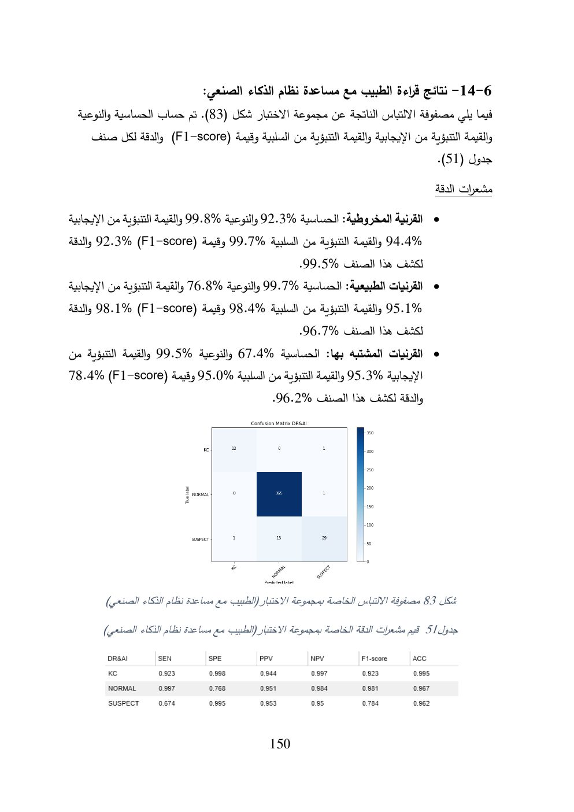
Die Tabelle wird als tatsächliches Originalseitenbild gezeigt, weil die Struktur in diesem Segment nicht zuverlässig vollständig als HTML rekonstruiert werden konnte. Original S. 150 ist auch im unveränderten PDF-Faksimile enthalten.
Tabelle 52
Genauigkeitskennwerte der Testgruppe (Arzt mit Unterstützung des SIRIUS-Geräts)
Quelle: Originaldissertation, Original S. 151. Rechtebasis: lokal gerendertes Originalseitenbild; keine externe Grafiklizenz.
{kind=link}
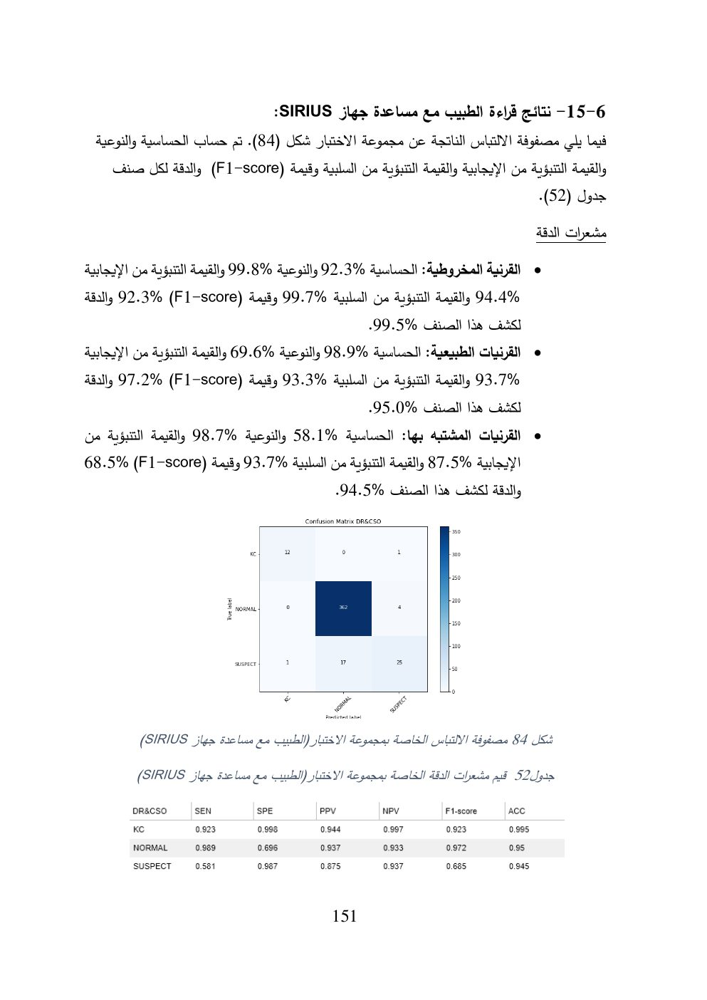
Die Tabelle wird als tatsächliches Originalseitenbild gezeigt, weil die Struktur in diesem Segment nicht zuverlässig vollständig als HTML rekonstruiert werden konnte. Original S. 151 ist auch im unveränderten PDF-Faksimile enthalten.
Tabelle 53
Zusammenfassung der McNemar-Tests
Quelle: Originaldissertation, Original S. 152. Rechtebasis: lokal gerendertes Originalseitenbild; keine externe Grafiklizenz.
{kind=link}
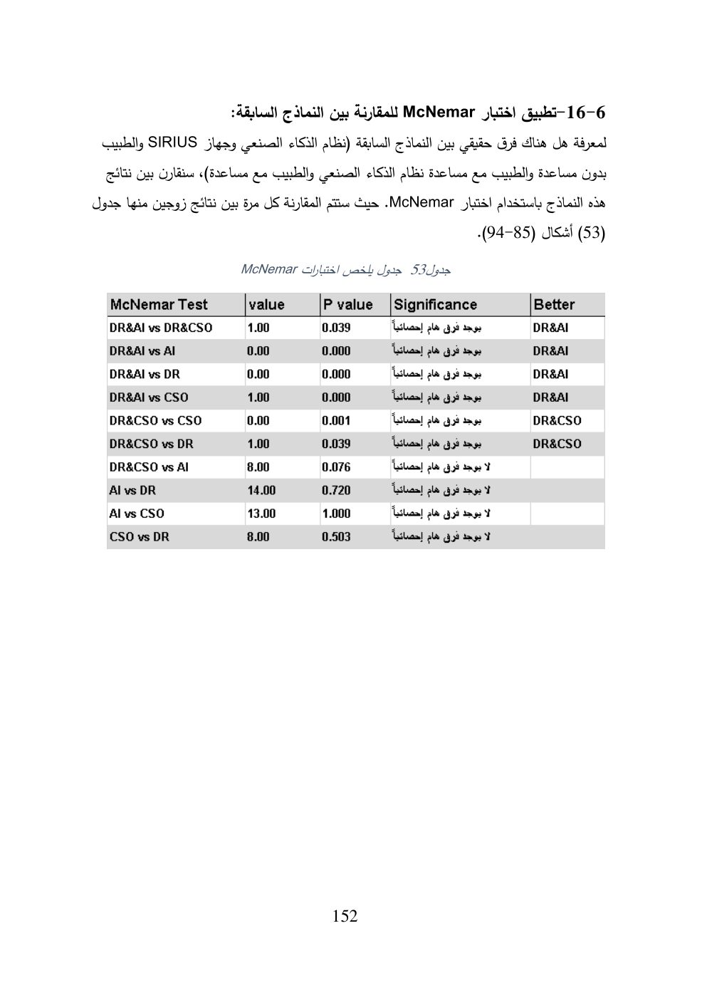
Die Tabelle wird als tatsächliches Originalseitenbild gezeigt, weil die Struktur in diesem Segment nicht zuverlässig vollständig als HTML rekonstruiert werden konnte. Original S. 152 ist auch im unveränderten PDF-Faksimile enthalten.
Tabelle 54
Zusammenfassung der Genauigkeitskennwerte der neuronalen Netze zur Erkennung keratokonischer Fälle
Quelle: Originaldissertation, Original S. 161. Rechtebasis: lokal gerendertes Originalseitenbild; keine externe Grafiklizenz.
{kind=link}
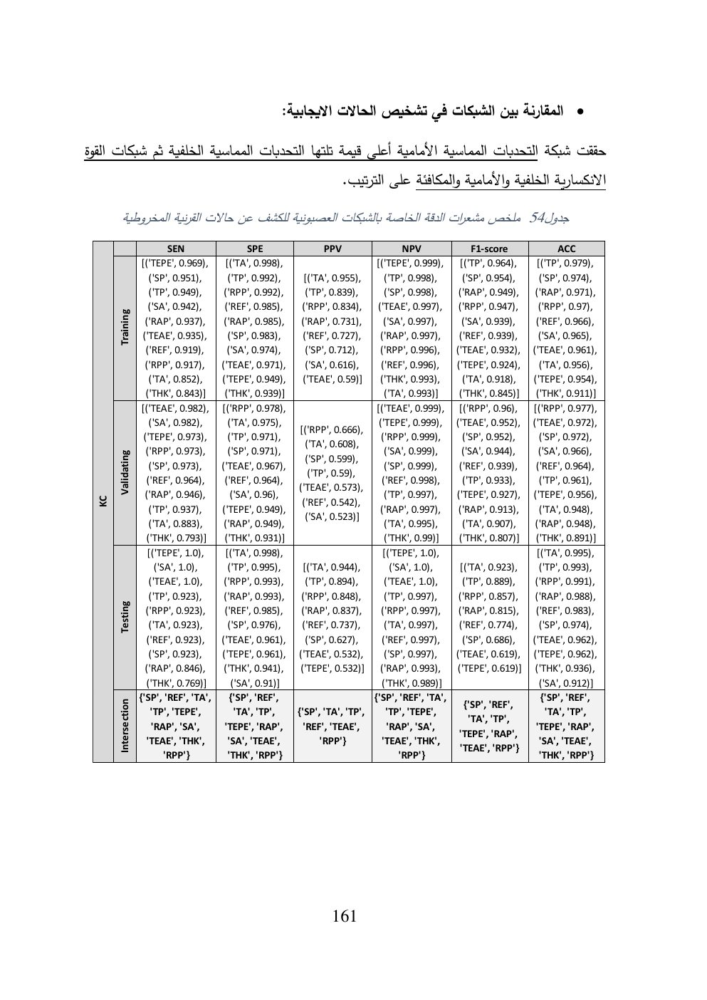
Die Tabelle wird als tatsächliches Originalseitenbild gezeigt, weil die Struktur in diesem Segment nicht zuverlässig vollständig als HTML rekonstruiert werden konnte. Original S. 161 ist auch im unveränderten PDF-Faksimile enthalten.
Tabelle 55
Zusammenfassung der Genauigkeitskennwerte der neuronalen Netze zur Erkennung normaler Hornhäute
Quelle: Originaldissertation, Original S. 163. Rechtebasis: lokal gerendertes Originalseitenbild; keine externe Grafiklizenz.
{kind=link}
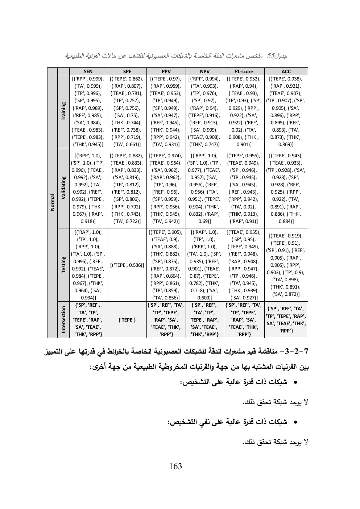
Die Tabelle wird als tatsächliches Originalseitenbild gezeigt, weil die Struktur in diesem Segment nicht zuverlässig vollständig als HTML rekonstruiert werden konnte. Original S. 163 ist auch im unveränderten PDF-Faksimile enthalten.
Tabelle 56
Zusammenfassung der Genauigkeitskennwerte der neuronalen Netze zur Erkennung verdächtiger Hornhäute
Quelle: Originaldissertation, Original S. 164. Rechtebasis: lokal gerendertes Originalseitenbild; keine externe Grafiklizenz.
{kind=link}
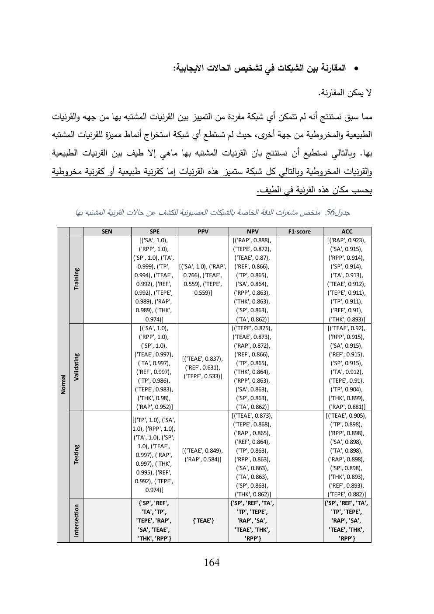
Die Tabelle wird als tatsächliches Originalseitenbild gezeigt, weil die Struktur in diesem Segment nicht zuverlässig vollständig als HTML rekonstruiert werden konnte. Original S. 164 ist auch im unveränderten PDF-Faksimile enthalten.
Tabelle 57
Zusammenfassung der Ergebnisse der neuronalen Netze und des KI-Systems
Quelle: Originaldissertation, Original S. 165. Rechtebasis: deutsche Übersetzung mit rekonstruierter HTML-Tabelle.
| Karte/Modell | Genauigkeit Training | Genauigkeit Validierung | Genauigkeit Test | gewichteter F1 Training | gewichteter F1 Validierung | gewichteter F1 Test |
|---|---|---|---|---|---|---|
| Gesamt | 0,945 | 0,941 | 0,922 | 0,943 | 0,939 | 0,912 |
| RAP | 0,907 | 0,858 | 0,896 | 0,890 | 0,846 | 0,852 |
| RPP | 0,889 | 0,907 | 0,896 | nan | nan | nan |
| TA | 0,871 | 0,876 | 0,896 | nan | nan | nan |
| TP | 0,898 | 0,897 | 0,896 | 0,863 | 0,865 | nan |
| TEAE | 0,890 | 0,912 | 0,893 | 0,860 | 0,883 | 0,864 |
| REF | 0,884 | 0,902 | 0,891 | 0,852 | 0,866 | 0,850 |
| SP | 0,896 | 0,907 | 0,891 | nan | nan | nan |
| TEPE | 0,902 | 0,904 | 0,877 | 0,875 | 0,882 | 0,853 |
| THK | 0,837 | 0,837 | 0,860 | 0,811 | 0,809 | nan |
| SA | 0,888 | 0,904 | 0,841 | 0,850 | nan | nan |
Tabelle 58
Zusammenfassung der Ergebnisse aller Modelle
Quelle: Originaldissertation, Original S. 166. Rechtebasis: deutsche Übersetzung mit rekonstruierter HTML-Tabelle.
| Modell | Genauigkeit | gewichteter F1-Score |
|---|---|---|
| DR&AI | 0,962 | 0,959 |
| DR&CSO | 0,945 | 0,941 |
| DR | 0,929 | 0,924 |
| AI | 0,922 | 0,912 |
| CSO | 0,919 | 0,911 |